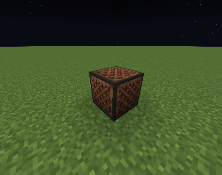
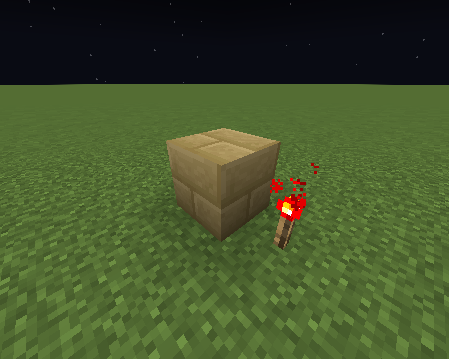
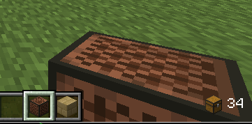
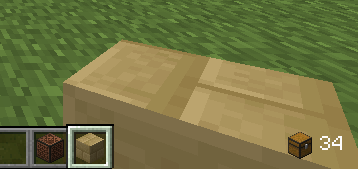
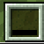

So yeah, I did some more Minecraft texturepack stuff, but instead of fonts, I'll be doing custom blocks and items in Minecraft.
In my previous article I talked about how to make custom chat icons using fonts.
So how do we add custom blocks? Well Minecraft has something called block states. Block states are basically block data, but with resource packs, you can give each block state a different texture. And note blocks have many block states in Minecraft. To be exact a note block has 800 different block states (because the note, instrument and redstone power is a different state), which means we can have upto 800 different textures.
And what about items? Each minecraft item has something called custom model data. Custom model data is basically a number that can go upto about 2 billion. Using texturepacks we can give each custom model data a different texture.
So let's get started with blocks! I started by creating a basic resource pack where I firstly created the assets folder. In the assets folder I put 3 children, a blockstates folder, a models and a textures folder. In the blockstates folder you need to create a file called note_block.json.
"variants": {
"instrument=harp,note=0,powered=true": { // The block state for which the texture should apply
"model": "minecraft:block/brown_stone_bricks" // The location to the model file
}
}
}
In the example above, we set the note block's model to mincraft:/block/brown_stone_bricks if it is powered and his instrument and note are the defaults. But now we are missing the model, so let's move on to creating the model.
In the models folder, we firstly need to create a block folder, in which we need to create a file called brown_stone_bricks.json.
"parent": "minecraft:block/cube_all",
"textures": {
"all": "minecraft:block/brown_stone_bricks" // The location to the PNG file
}
}
Now that we have the model, you will notice that the texture is not found if we try it out in Minecraft. To fix that, we need to provide a texture which is done easily in the textures folder.
In the textures folder, create a folder called block, in which you can add your image. The image should be named brown_stone_bricks.png.
And we now have a custom block! Here are my results:
 
Altough if we have the block in our inventory, we will notice that it's still a normal note block without our custom texture. So let's fix that.
In order to fix it, I used custom model data for items. Each Minecraft block has a so called "block item" as well.
A block item is basically used to represent a block in inventories. Block items behave like normal items, except if you right click holindg one, they place down a block.
To make the note block have a custom model data, we first need to create a item folder inside the models folder. Inside that folder create a file called note_block.json.
"parent": "block/note_block",
"overrides": [
{
"predicate": {
"custom_model_data": 1000 // Which custom model data the cusotm texture is used
},
"model": "block/brown_stone_bricks" // The location for the item model }
]
}
So now if we give ourslf the item using
 
So I already covered how to make custom items briefly, but imma go into more depth now.
So as you probably could have guessed, we are gonna use custom model data.
I assume that you already have the folders mentioned above, so you can base this resource pack off the one you made until now. I won't do that in the example.
Firstly, we create a new file called iron_ingot.json in the models/item folder.
"parent": "item/generated",
"textures": {
"layer0": "item/iron_ingot"
},
"overrides": [
{
"predicate": {
"custom_model_data": 1000 Which custom model data the cusotm texture is used
},
"model": "item/black_bar" // The location for the item model
}
]
}
So in this example, the item (iron ingot) will change it's model to item/black bar if it's custom model data is set to 1000. But if we try it out, it will just show us the missing texture. In order to fix it, we need to provide the model.
To create a model, we make a new file located at models/item/black_bar.json.
"parent": "item/generated",
"textures": {
"layer0": "item/black_bar"
}
}
Well, now we are still missing the texture. We just need to provide a texture in textures/item/black_bar.png. I usually use piskel for the textures. And now it should works if you give yourself the item using the command below:
And there we go, it wokrs!

I'd like to give some credit to this PlanetMinecraft post for helping me with custom model data.
Also this blog now has a RSS feed located here!